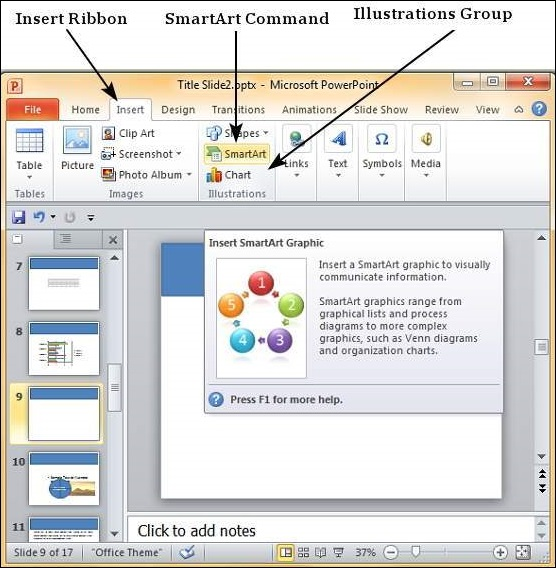
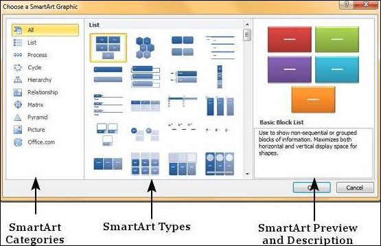
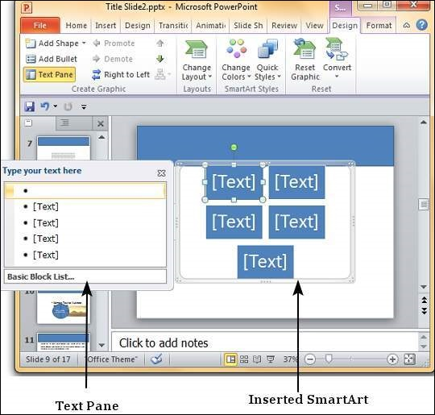
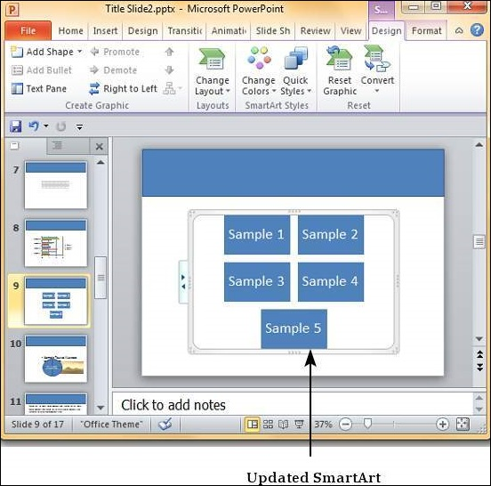
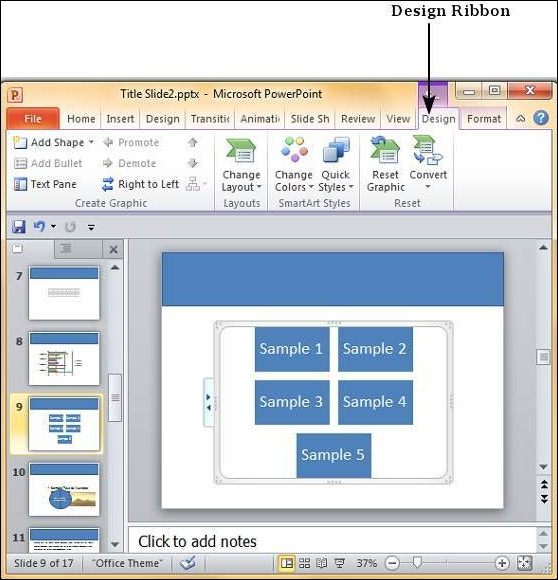
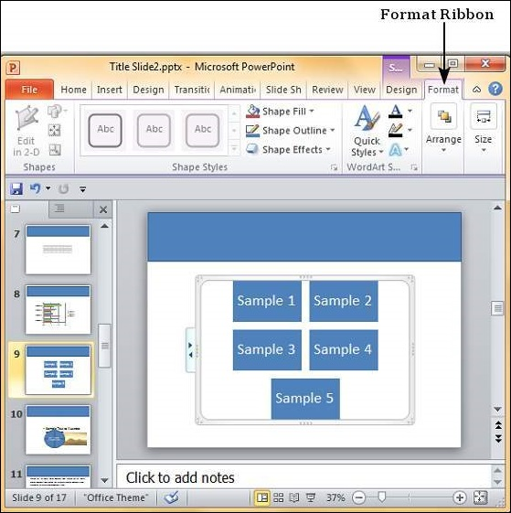

PowerPoint offers a unique feature called SmartArt which allows users to add text to predefined art designs. The advantage with SmartArt is that although each component of the SmartArt can be edited individually, you can also modify the SmartArt as a whole while retaining the settings on each individual component.
The following steps will help you add a SmartArt to PowerPoint.
Step 1 − Go to the Illustrations group under the Insert ribbon.

Step 2 − Click on the SmartArt command to open the Choose a SmartArt Graphic dialog. You can choose the SmartArt category and pick individual SmartArt types from the list. You also get a preview and a short description of the graphic in the preview section.

Step 3 − Select the SmartArt type and click OK or double-click on the SmartArt type to insert the graphic in the slide.
Step 4 − The graphic is inserted in the slide along with a text pane where you can enter/ modify the SmartArt text.

Step 5 − Add the necessary details and close the text pane to complete the SmartArt insertion.

The PowerPoint SmartArt formatting features have been grouped under two ribbons: Design and Format. The sections below discuss the features under each ribbon. To access these ribbons, you must select the SmartArt first.
We will now understand the various SmartArt design features in PowerPoint.

The following table describes the various SmartArt design features in PowerPoint.
| Feature | Sub Features | Description |
|---|---|---|
| Create Graphic | Add Shape | Adds another shape to the current SmartArt graphic; this also adds another bullet in the text pane. |
| Add Bullet | Adds another bullet in the text pane; this also adds another shape to the graphic. | |
| Text Pane | Toggles text pane visibility. | |
| Promote | Indents bullet to higher level in text pane - useful only in multi-level SmartArt. | |
| Demote | Indents bullet to lower level in text pane - useful only in multi-level SmartArt. | |
| Right to Left | Helps reverse the direction of the SmartArt flow. | |
| Move Up | Moves the bullet up in the text pane or the shape to the left in the graphics. | |
| Move Down | Moves the bullet down in the text pane or the shape to the right in the graphics. | |
| Layouts | Layouts | Allows you to change the layout of SmartArt graphics to one from the list. |
| Smart Styles | Change Colors | Changes the color scheme for the SmartArt graphics. |
| SmartArt Styles | Allows you to change the SmartArt graphics styles to one of the predefined ones from the list with one click. | |
| Reset | Reset Graphic | Removes all the customization done on the SmartArt graphic. |
| Convert | Converts SmartArt graphic to regular shapes or plain text. |
We will now understand the various SmartArt format features in PowerPoint.

The following table describes the various SmartArt format features in PowerPoint.
| Feature | Sub Features | Description |
|---|---|---|
| Shapes | Change Shape | Changes the selected shape in the SmartArt to one of those in the list. |
| Larger | Increases the size of the selected shape. | |
| Smaller | Decreases the size of the selected shape. | |
| Shape Styles | Shape Fill | Offers different shades to be added to selected SmartArt graphics item. You can pick from solid shade, texture, image or gradient shading. |
| Border | Offers different border options for selected SmartArt graphics item. You can edit the border color, thickness and style. | |
| Effects | Offers the ability to add special effects to selected SmartArt graphics item. | |
| Word Art Styles | Text Fill | Allows you to change the color of the text within the SmartArt. |
| Text Outline | Allows you to add an outline to the text within the SmartArt and change the outline color, weight and style. | |
| Text Effects | Allows you to add special effects (like reflection, shadow etc.) to the text within the SmartArt. | |
| Quick Styles | Contains a list of pre-defined Word Art styles that can be applied to the selected text within the SmartArt with a single click. | |
| Arrange | Bring Forward | Allows you to move the SmartArt up by one layer or right to the top. |
| Send Backward | Allows you to move the SmartArt down by one layer or right to the bottom of the slide. | |
| Selection Pane | Toggles the Selection and Visibility sidebar. | |
| Align | Allows you to align the entire SmartArt with reference to the slide. | |
| Group | Allows you to group multiple SmartArt as one group object, or split a group object into individual SmartArt. | |
| Size | Height | Allows you to adjust the SmartArt height. |
| Width | Allows you to adjust the SmartArt width. |